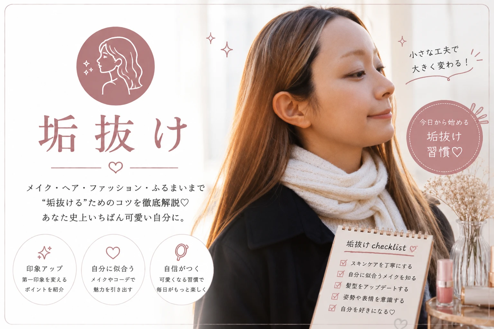

30日で垢抜ける 美容ルーティン
毎日少しずつ続けられる美容習慣で、 第一印象をアップしましょう。
記事を見る →
キレイは、日常の積み重ね。
垢抜けたい人のために、 メイク・スキンケア・ヘアスタイル・ ファッション・美容習慣まで、 今日から実践できる方法を分かりやすく紹介します。

「垢抜け」とは、 メイクだけではなく、 スキンケア・ヘアスタイル・ファッション・ 姿勢・表情・生活習慣などを整え、 第一印象をより魅力的にすることです。
このカテゴリーでは、 初心者でも無理なく始められる美容習慣や、 コスパの良いアイテム、 毎日続けられる垢抜けテクニックを紹介しています。
「もっと自分に自信を持ちたい」 「印象を変えたい」 「何から始めればいいか分からない」 そんな方に向けた実践的な情報をまとめています。
メイク・スキンケア・ヘア・ファッションまで、 垢抜けにつながる最新記事を紹介します。


多くの読者に支持されている垢抜け記事をランキング形式で紹介します。
気になるジャンルから垢抜けのコツを学べます。
メイク・スキンケア・ファッション・ヘアスタイルなど、 垢抜けに役立つ情報を定期的に更新しています。